Upwork Asistant to Go online Again
Why now > Contract Not Closed / 22 March
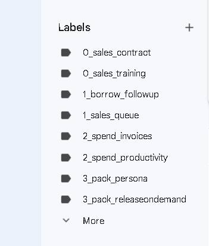
Rationale > Contractor needs to daisy chain the customers
Oct 2023 > 6 month old needs a revision
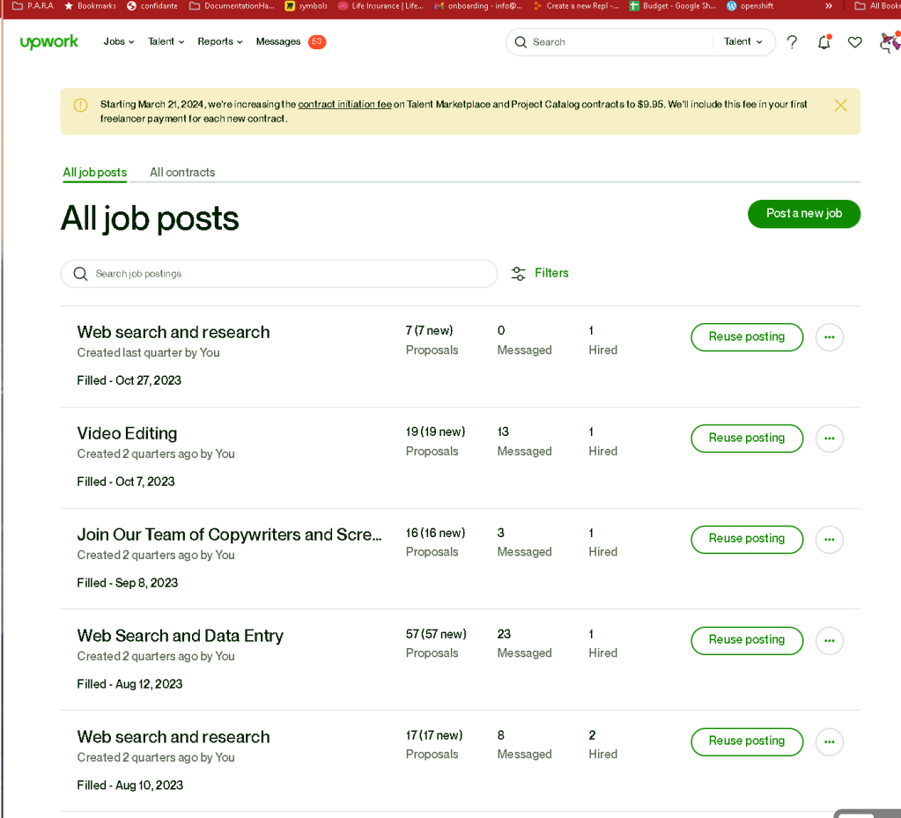
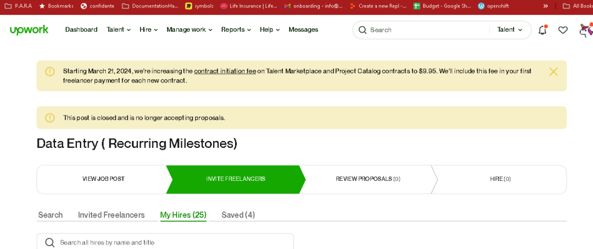
Target Market
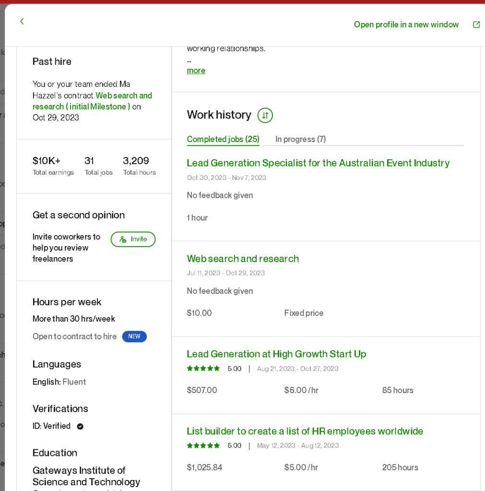
Link Removed
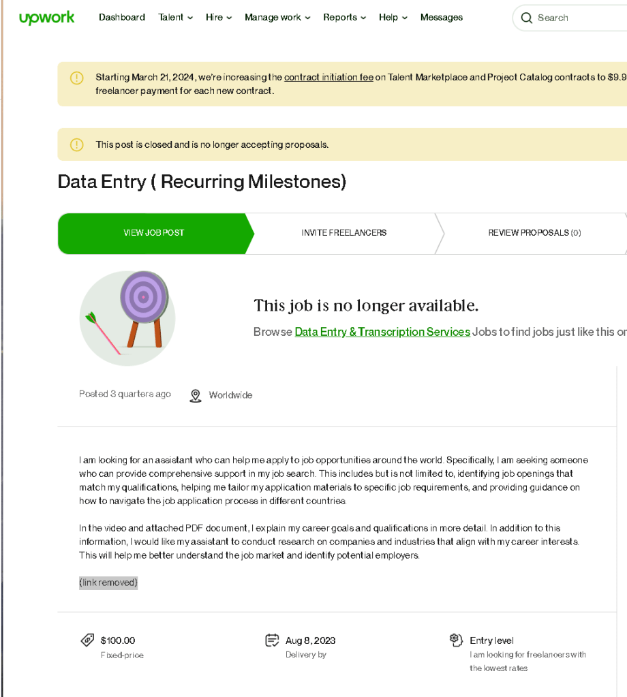
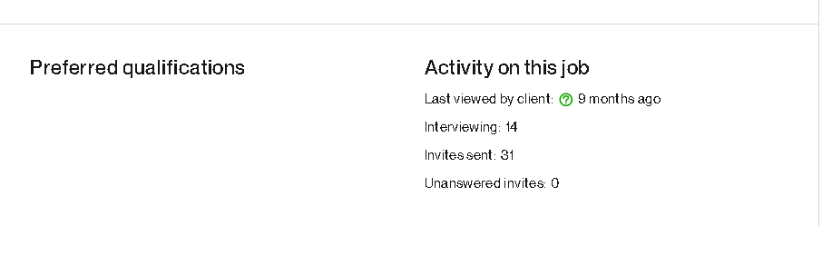
Rates and payments
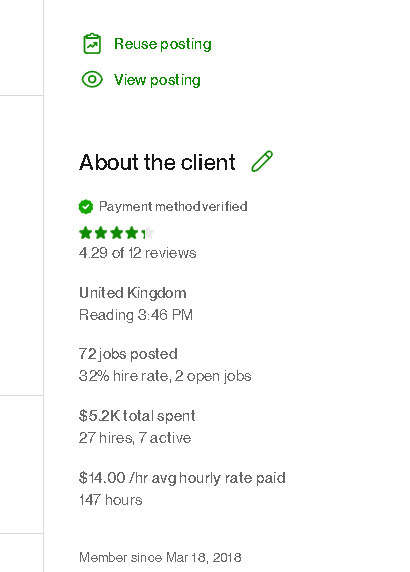
Old Job Post
I am looking for an assistant who can help me apply to job opportunities around the world. Specifically, I am seeking someone who can provide comprehensive support in my job search. This includes but is not limited to, identifying job openings that match my qualifications, helping me tailor my application materials to specific job requirements, and providing guidance on how to navigate the job application process in different countries.
In the video and attached PDF document, I explain my career goals and qualifications in more detail. In addition to this information, I would like my assistant to conduct research on companies and industries that align with my career interests. This will help me better understand the job market and identify potential employers.
Start with 500 now > Load 100 dollar miletstones
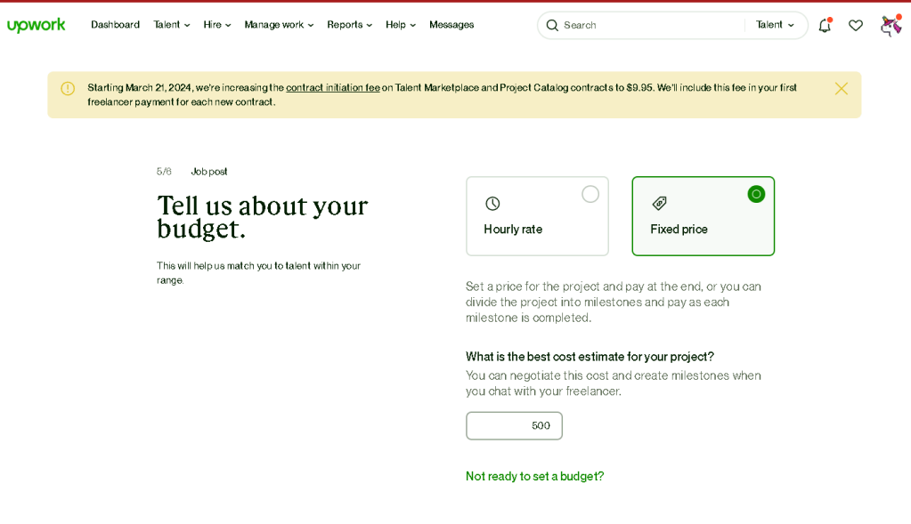
New Text
I am looking for an assistant who can help me apply to job opportunities around the world. Specifically, I am seeking someone who can provide comprehensive support in my job search. This includes but is not limited to, identifying job openings that match my qualifications, helping me tailor my application materials to specific job requirements, and providing guidance on how to navigate the job application process in different countries.
In attached documentation, I explain my career goals and qualifications in more detail. In addition to this information, I would like my assistant to conduct research on companies and industries that align with my career interests. This will help me better understand the job market and identify potential employers and customers.
cv-uk-resume-detailed-_-erdem-sahin-contractor-devops-release-train-engineer-v1-google-docs-2Download
Job Link >> https://www.upwork.com/ab/applicants/1771203752242712576/job-details
Invite Freelancers Link >>
Message For the Freelancer >
Get it from Rachel
https://www.upwork.com/ab/messages/rooms/room_4fba21a1d570ca1bfaf16214ff2e7550?pageTitle=Rachel%20Ann%20%20Frias&companyReference=975364165366280192&sidebar=true
5d4c8f2e-d1bf-4ce2-b50e-4c98570540a3_statement_of_work_definition_job_applications_v2.1Download
Invitation >>>
Hello!
I've posted a job that might interest you. If you're available and interested, please submit a proposal.
Here's the introduction:
And a sample milestone:
This is a sample from one of the freelancers that worked with us. It shows how we manage applications and control the process.
Regards,
So many to send
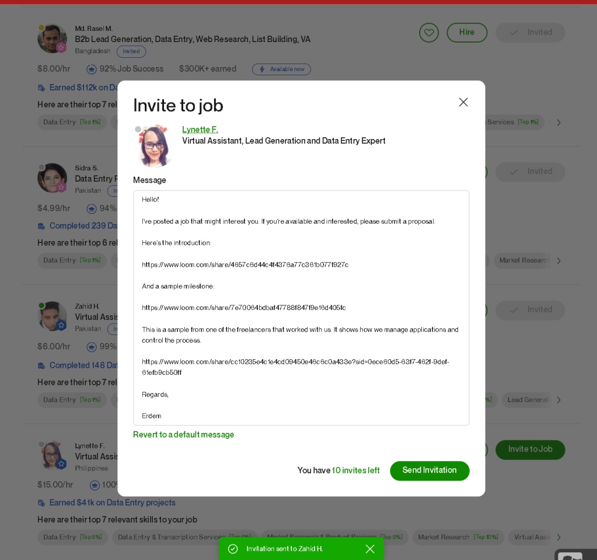
Collect videos in one folder
https://www.loom.com/looms/videos/Daisy-Chain-Freelancer-Applications-59f1683fc1f543ddb3c2f80d07237411
Ask for questions
Let me know your questions from the process > https://loom.com/share/folder/59f1683fc1f543ddb3c2f80d07237411
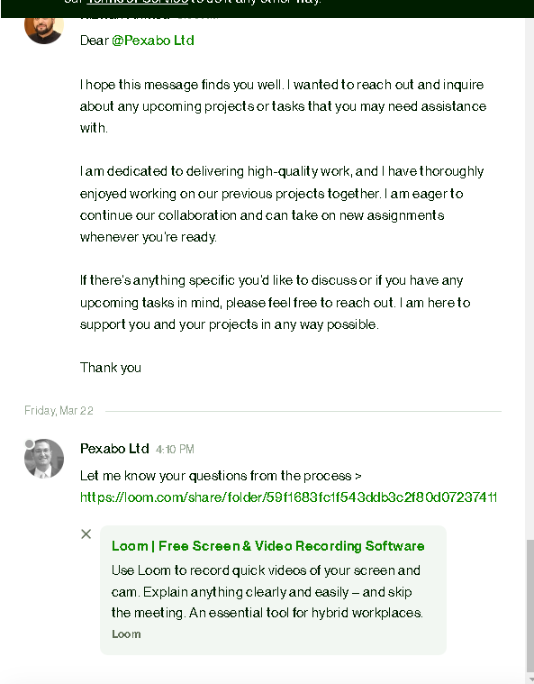
**Update the email **
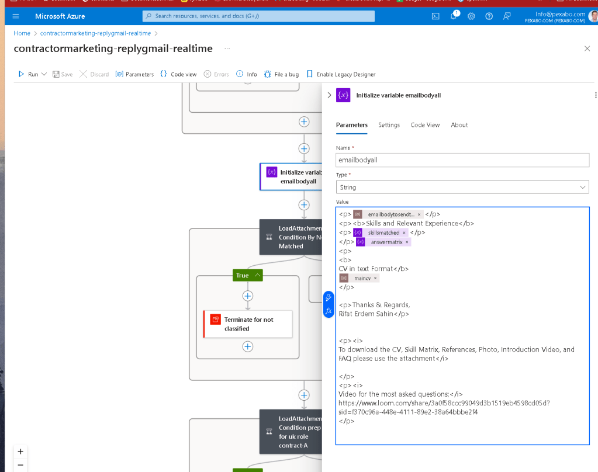
Updated Job Apllications Process v3
https://pexabo.notion.site/Job-Applications-Workflow-v3-f30f92dd832746ecbf2e12de0a1a7d7b?pvs=4
Create Canva Presentation Distill in the new way of applications
https://www.canva.com/design/DAGAQPlyzAc/8MUYpkWUvBdFJIAWfF4G6g/edit?utm_content=DAGAQPlyzAc&utm_campaign=designshare&utm_medium=link2&utm_source=sharebutton
Notion I had already created it > the presentation makes it easier for the person at the first time to update it
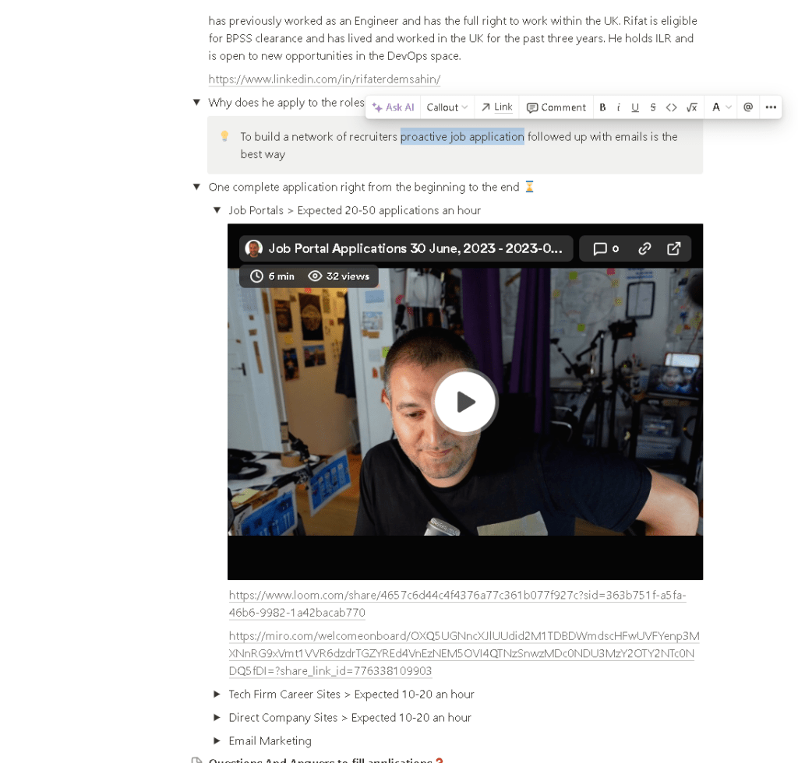
The old style is not great as the person needs a presentation for this > https://rifaterdemsahin.com/2023/07/03/hiring-freelancers-to-do-applications/
This is much more explicit
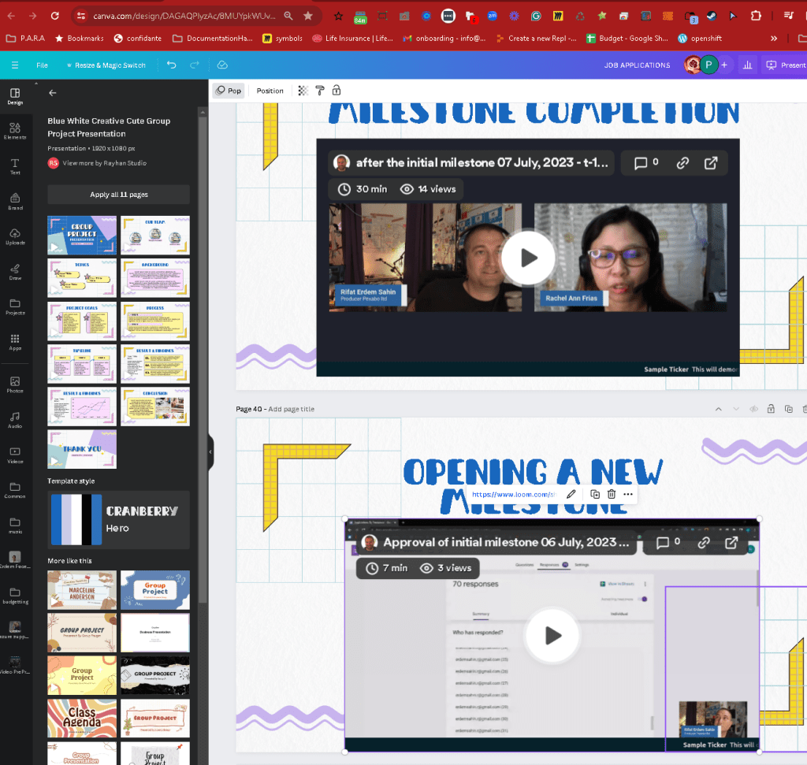
many messages are here give them the 10 dollar initial milestone and ask them for initial work.
One site enroll 5
Applications 5
Use form
Show timing
Imported from rifaterdemsahin.com · 2024